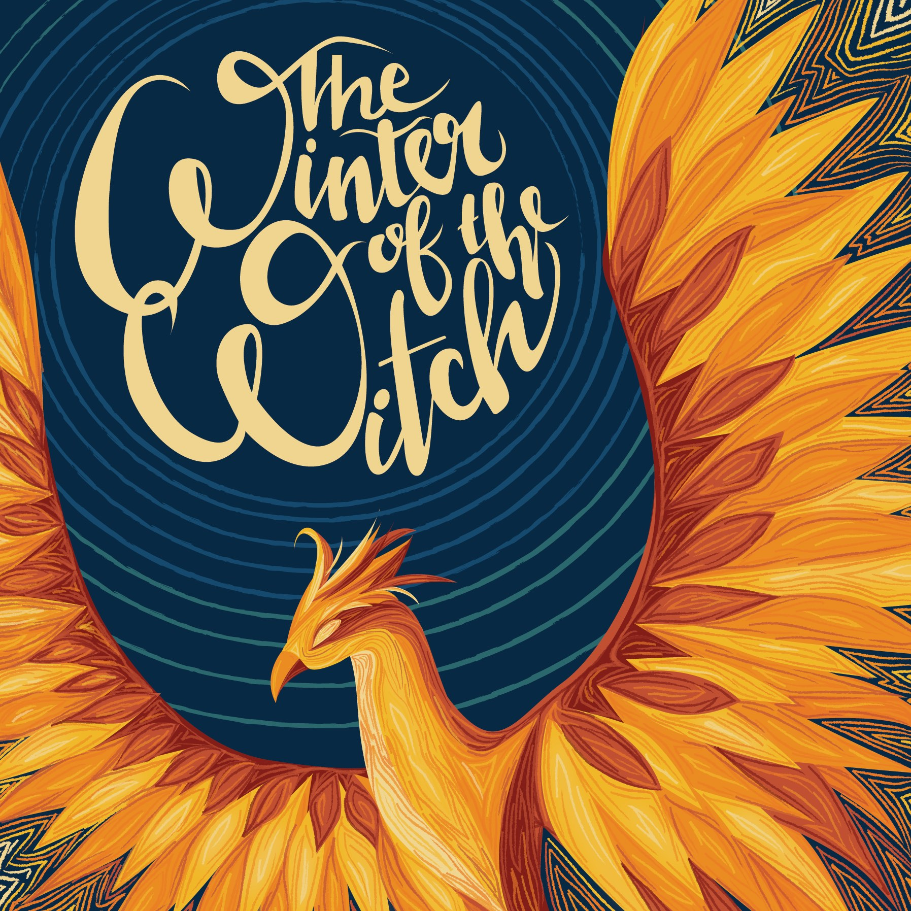
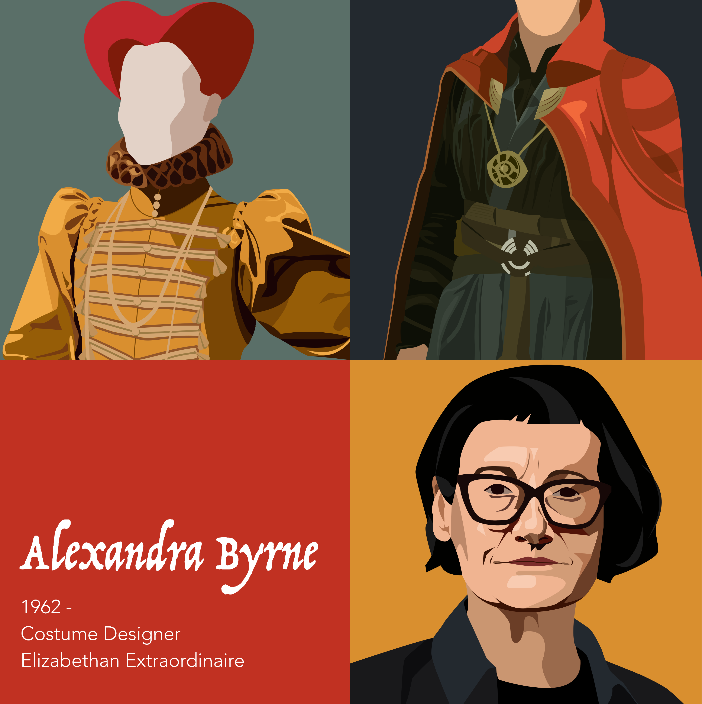
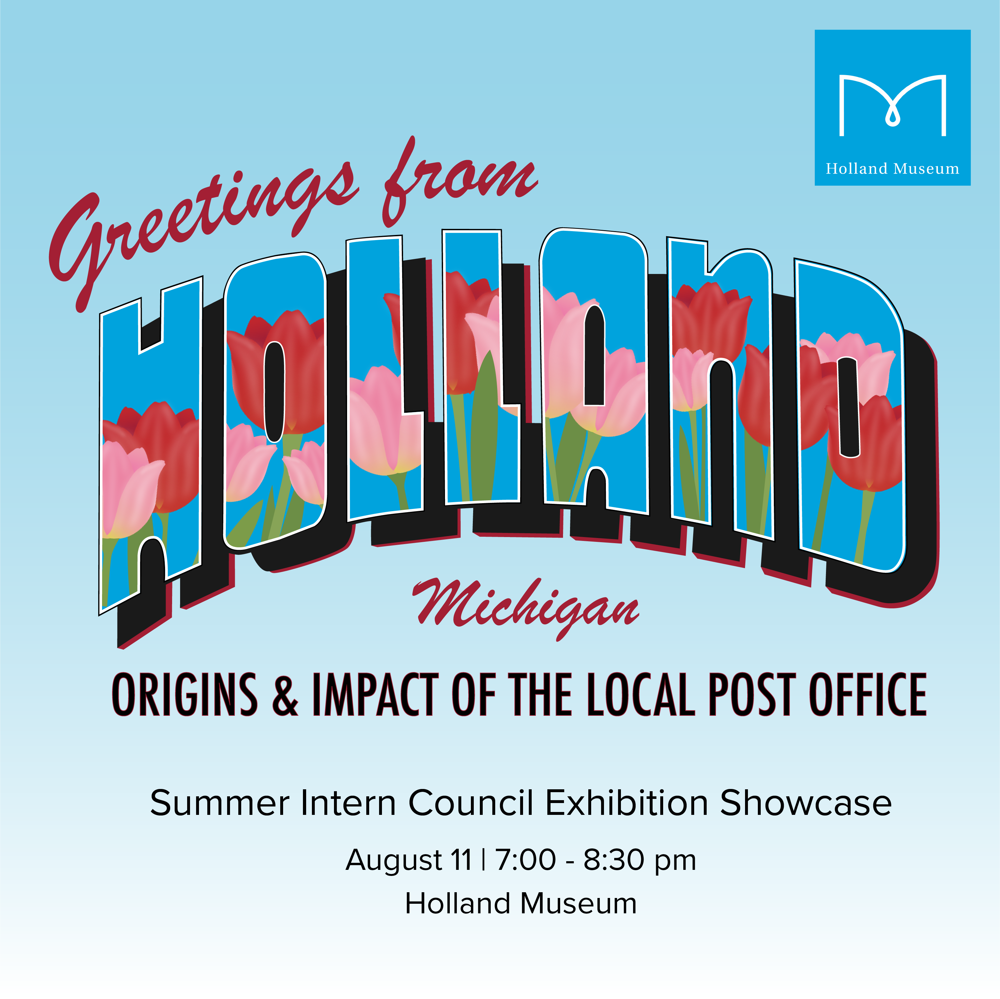
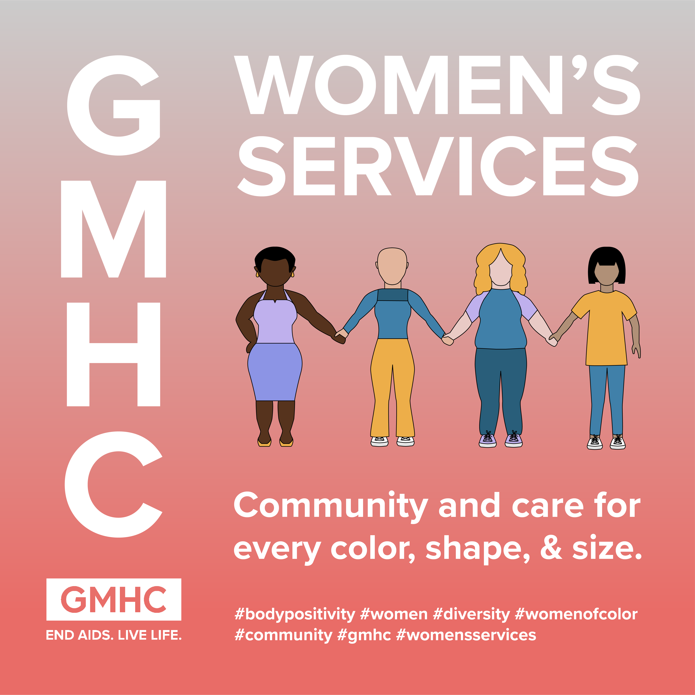
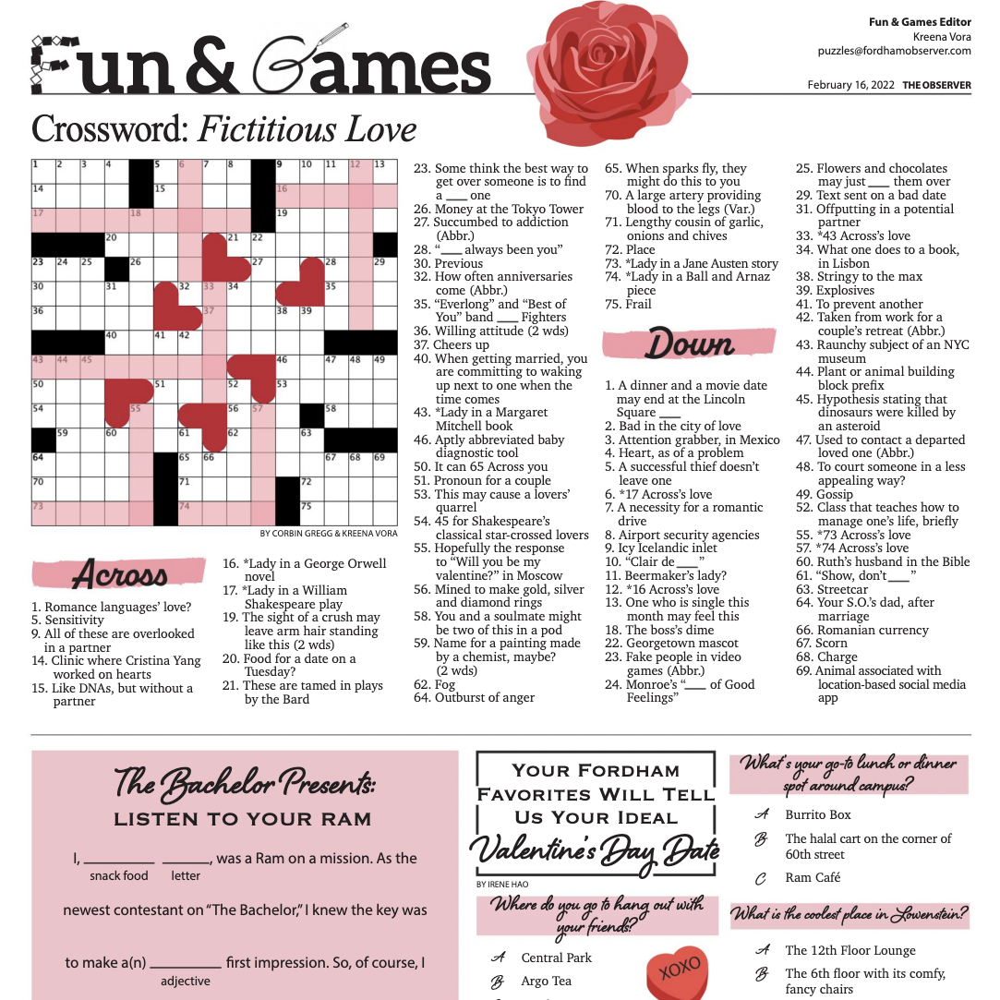
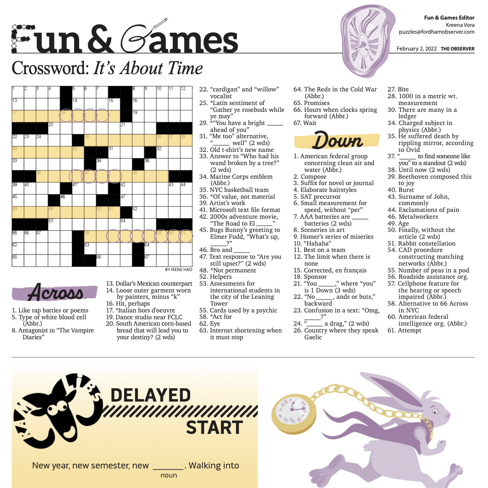

is a student of New Media and Digital Design in NYC. She has studied graphic design, user experience, social media, and computer programming. She is most passionate about marketing for non-profits, having gained experience through internships with the Gay Men’s Health Center (GMHC) and the Holland Museum.

The final assignment of Kyla’s Graphic Design and Digital Tools class was to redesign a book cover of her choice. Kyla decided to redesign The Winter of the Witch by Katherine Arden. She created this cover in Adobe Illustrator using a Wacom tablet to add texture. The typography of the title and the author’s name was created from scratch using her hand lettering skills.

The graphic above was an assignment in Kyla’s class, “Graphic Design and Digital Tools.” Each tile was created in Adobe Illustrator to admire the work of costume designer Alexandra Byrne.

This graphic was completed for a summer internship at the Holland Museum working in their communications department. Interns at the museum across all departments collaborated to plan a small exhibition in the front lobby of the Museum; this graphic is marketing the opening of the exhibit, titled Greetings from Holland, Michigan: Origins and Impact of the Local Post Office. All design work displayed here was created independently by Kyla.

A graphic for the Gay Men’s Health Center (GMHC). Kyla worked with the director of Women’s Services to create a tag line and an accompanying visual. The women were illustrated independently using sketches made on paper.


The Observer is Fordham Lincoln Center’s online and print newspaper, publishing biweekly. As the Assistant Layout Editor, Kyla was responsible for print layout. She primarily worked on the Fun & Games section of the newspaper, embracing fun graphics and color palettes. Below are some of her favorite layouts from her time on The Observer editorial board.
all rights reserved